ホーム ／ 事業案内

私たちの仕事は、まちのインフラをつくる工程の“最初の一歩”に立つことです。道路・橋梁・河川・造成——そのすべては、地面を正確に「はかる」ことから始まります。
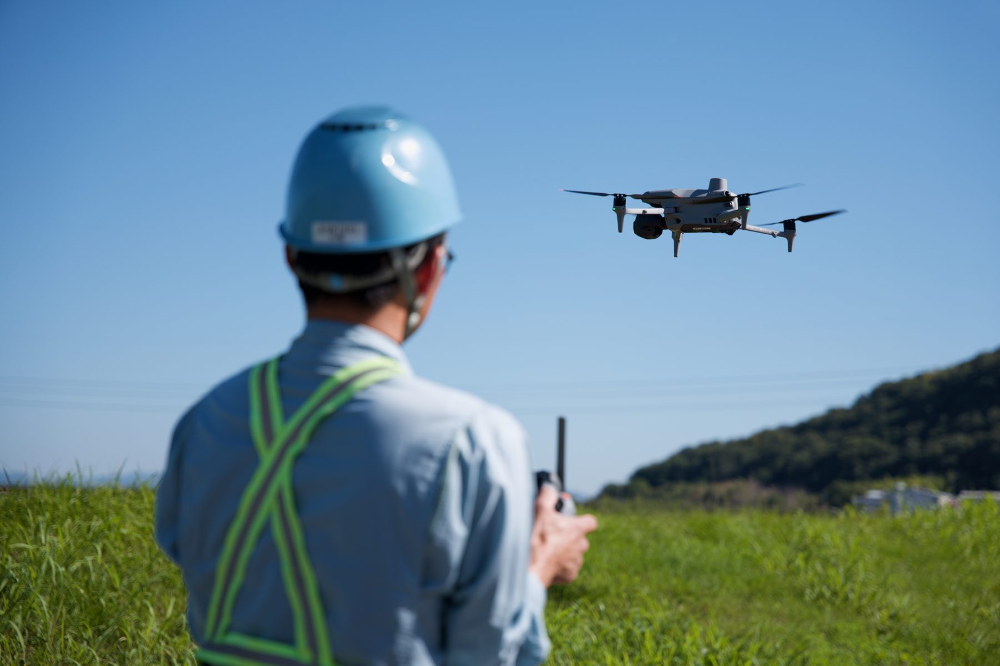
SURVEYING → DESIGN → MANAGEMENT1981年（昭和56年）の創業以来、私たちは公共測量・工事測量で培った「はかる技術」を軸に、調査・設計、そして施工管理へと領域を広げてきました。
3つの事業はそれぞれ異なる専門性を持ちますが、地続きの現場で互いに補完し合います。同じ会社の中で連携できるから、精度と工程の両面でお客様の負担を減らすことができる——これが、私たちが3事業を一社で持ち続ける理由です。
近年はドローン空撮・3Dレーザースキャナー・GNSSといった先端技術を積極的に取り入れ、i-Construction時代の現場に応えています。それでも変わらないのは、「早く・安く・良く」——技術屋の良心を軸に、現場で汗をかく姿勢です。
それぞれの専門分野を、このページの中で順にご紹介します。3つの領域は互いに補完し合い、現場の“はじまりから終わりまで”を支えます。
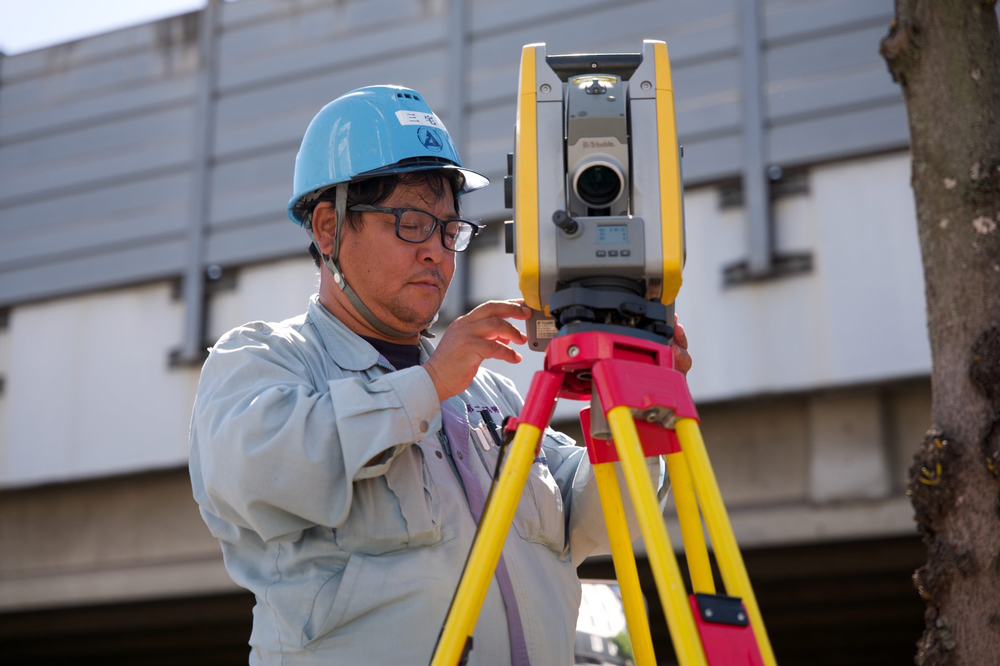
土木工事・橋梁工事・舗装工事・トンネル工事・造成工事——あらゆる工事の"最初の一歩"を担うのが、私たちの仕事です。
官公庁発注の調査測量から民間の工事測量まで、顧客担当者の異動先でも業務依頼をいただける信頼関係を、全国の現場で築いてきました。
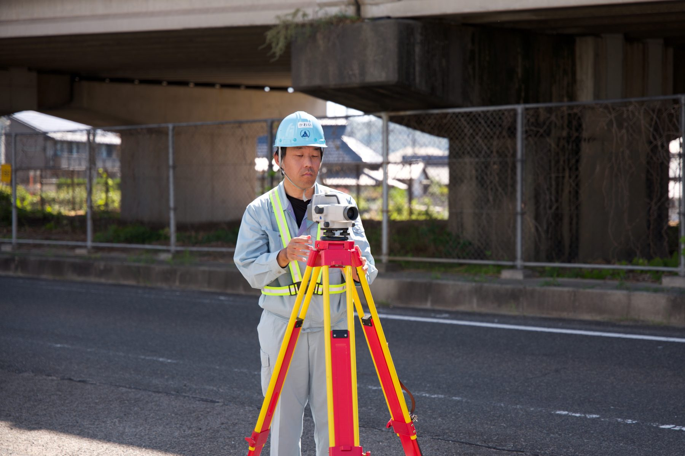
基準点測量／水準測量／地形測量／路線測量など、公共事業に必要な各種測量。
丁張り／出来形／縦断・横断／構造物測量など、現場の"施工"を支える測量。
河川・港湾の深浅測量、ドローン空撮、3Dスキャナー計測などの特殊測量。
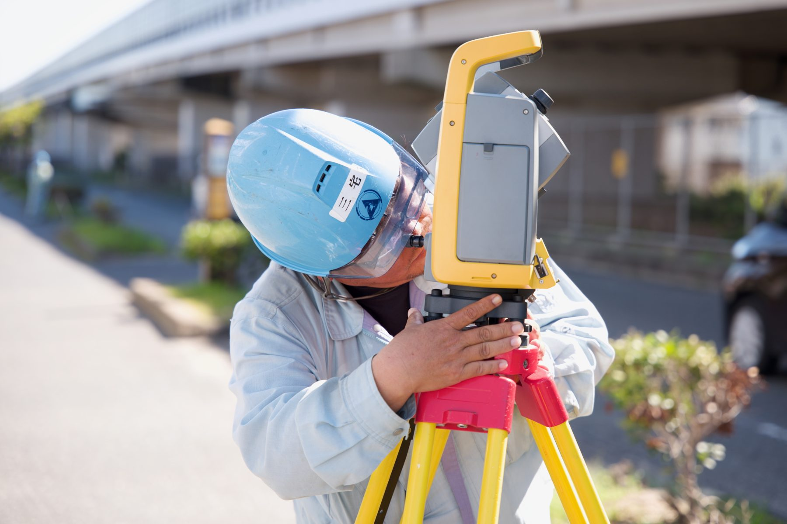
トータルステーション
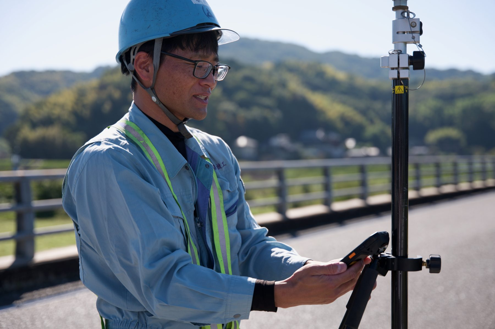
GNSS受信機
測量用ドローン
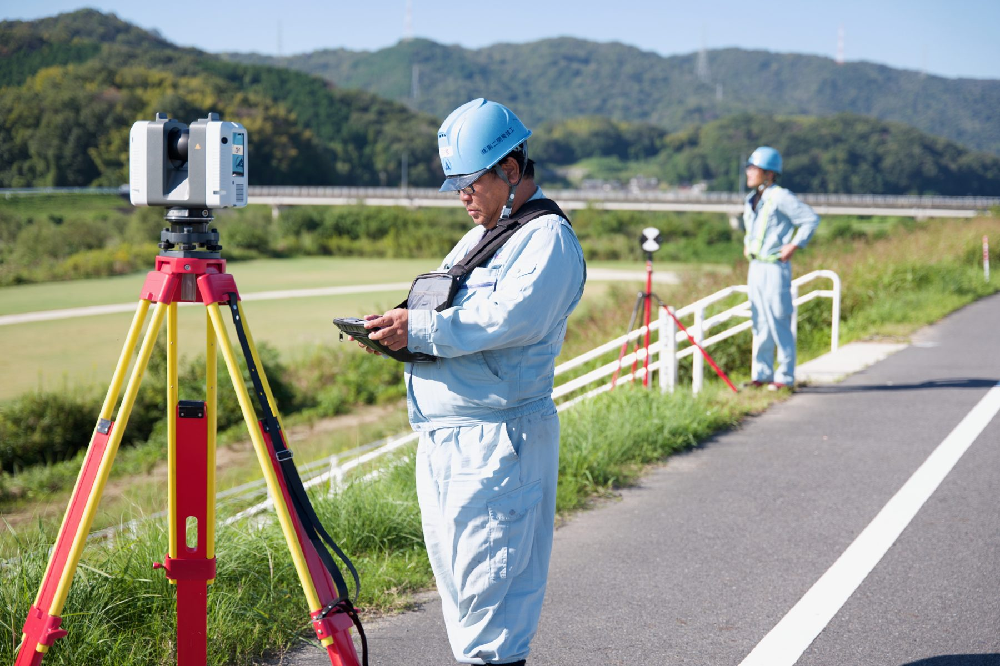
3Dレーザースキャナー
目的・範囲・納期・成果物形式を確認。
現場条件を確認し、最適な機材・工程を選定。
TS・GNSS・ドローン・3Dスキャナーで現場データを取得。
点群処理・図化・数値計算を経て、CAD／PDF／点群等で納品。
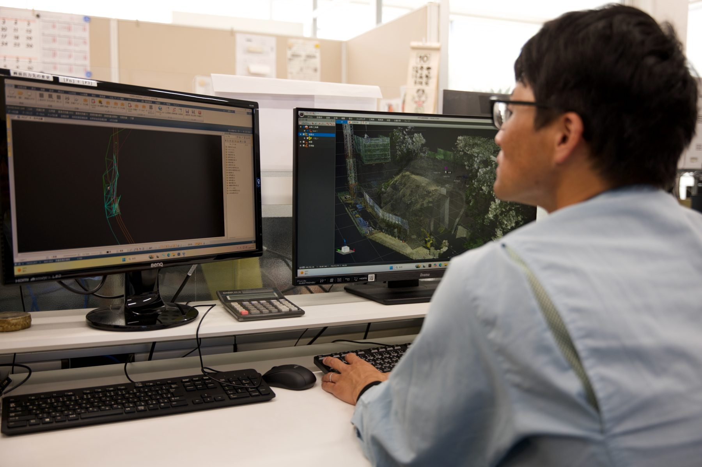
測量で得たデータを、そのまま設計・調査へ。同じ会社の中で連携できるため、精度と工程の双方でお客様の負担を減らします。

道路詳細設計・交差点設計・付属構造物設計。予備設計から詳細設計まで。
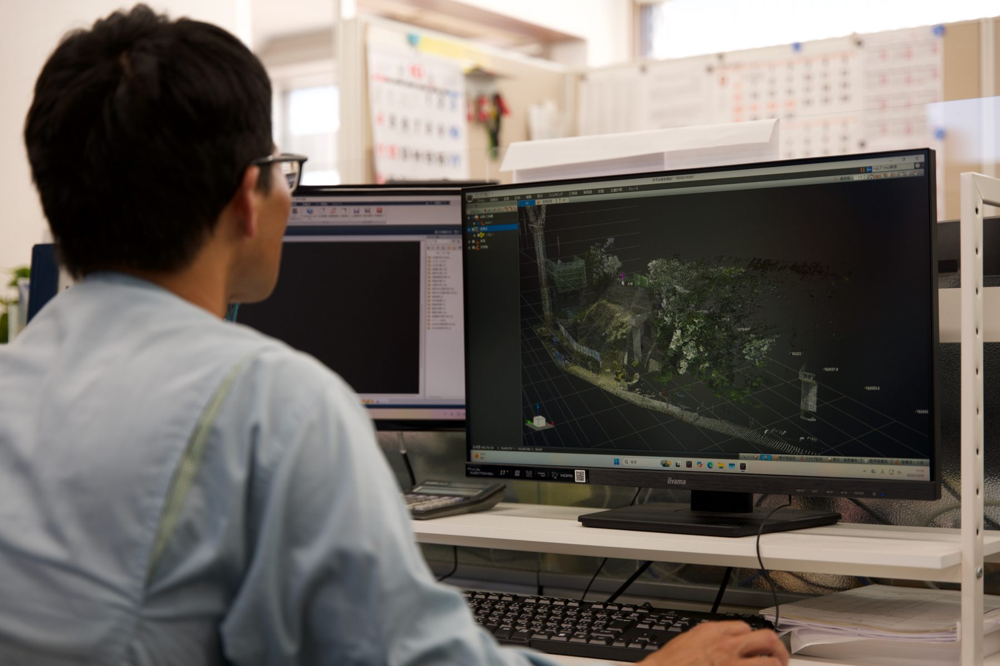
護岸設計・排水設計・小規模河川構造物設計。
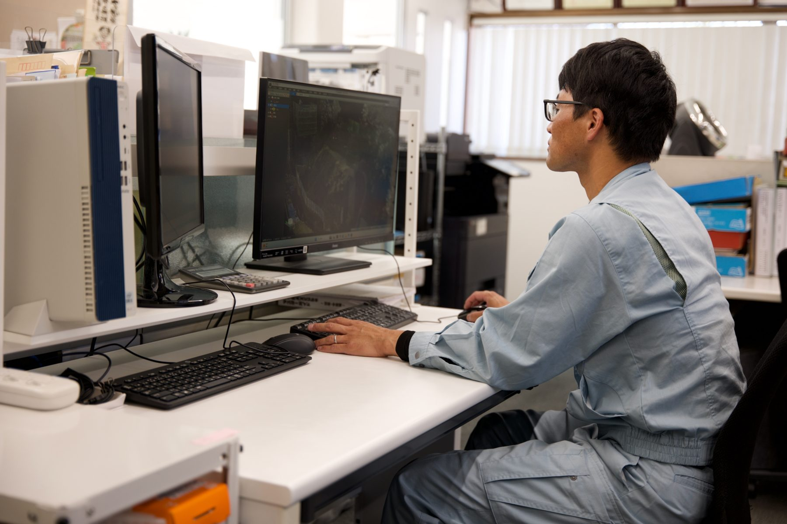
宅地・工業用地・農地の造成計画、土量計算、切土・盛土。
ボーリング調査、標準貫入試験、平板載荷試験、地下水位観測など、工事の安全性を左右する地盤情報を取得・解析します。
測量と組み合わせることで、3次元地形＋地盤データを一体で把握することが可能です。
事業予定地における動植物相の把握・保全対策検討。
工事前後の環境モニタリング。
工事・稼働時の周辺影響評価。
設計内容の妥当性、施工可能性、コスト適正性を第三者視点でチェック。手戻りリスクを最小化します。
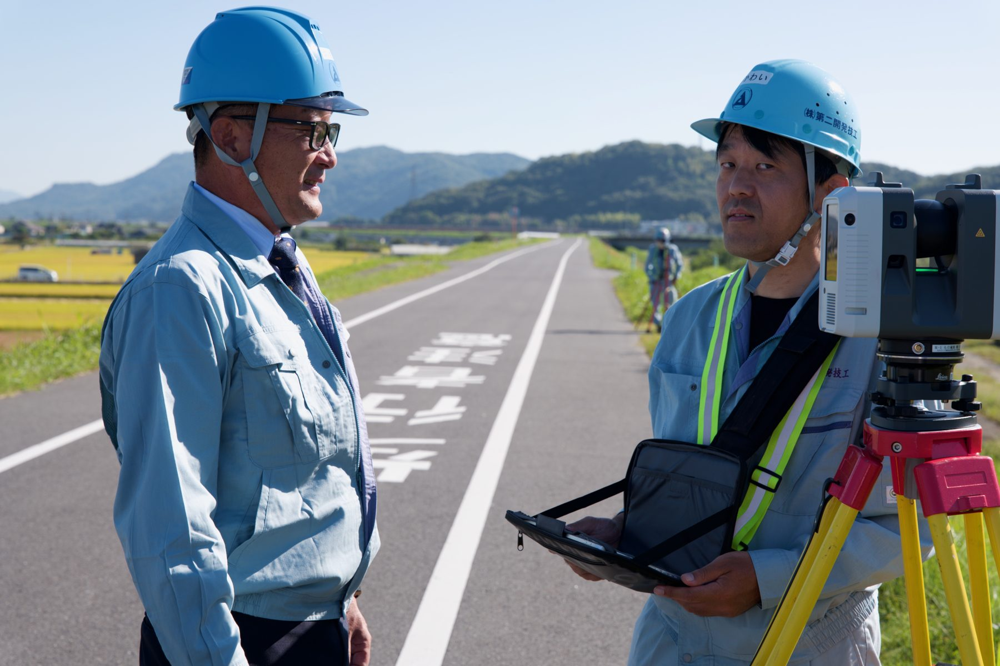
現場を「はかる」ことから始まる私たちが、施工の現場に立つ。だからこそ、測量精度と施工精度の橋渡しがスムーズです。
丁張りから出来形管理まで、同じチームで一貫対応が可能。
官公庁・ゼネコンの担当者様と共に、全国の工事現場へ派遣実績。
厚生労働省認可の派遣事業として、法令遵守で技術者を派遣します。
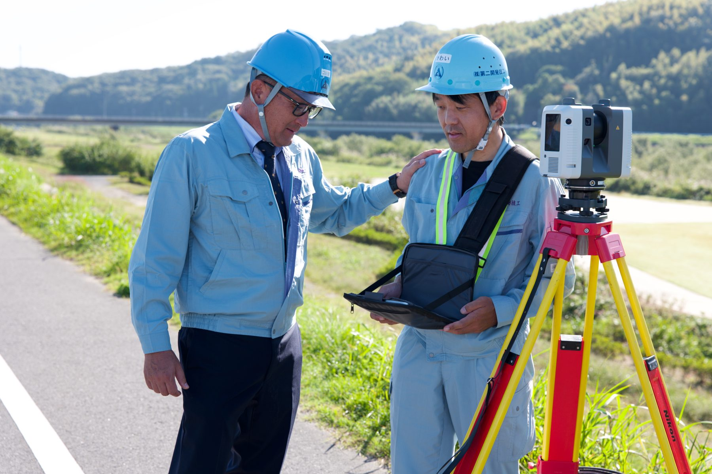
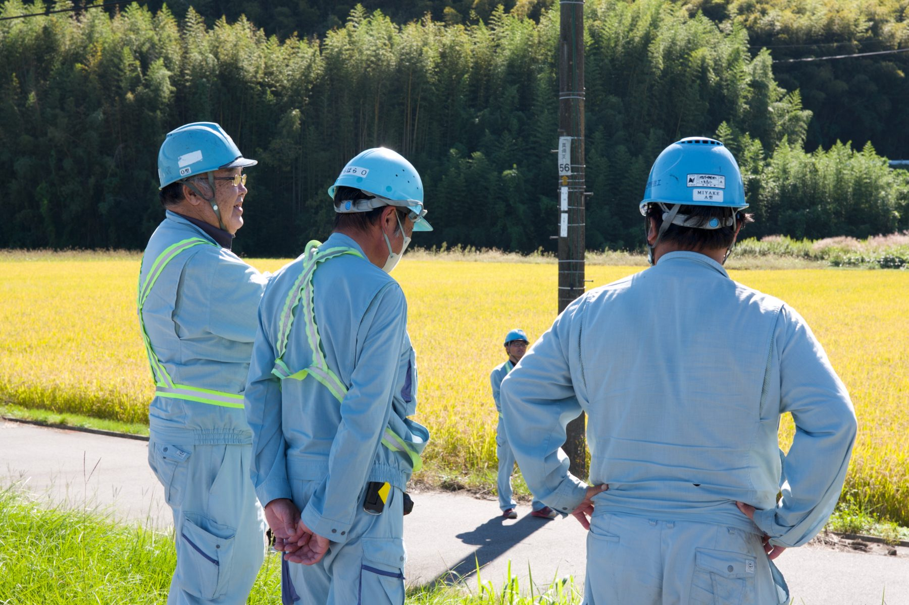
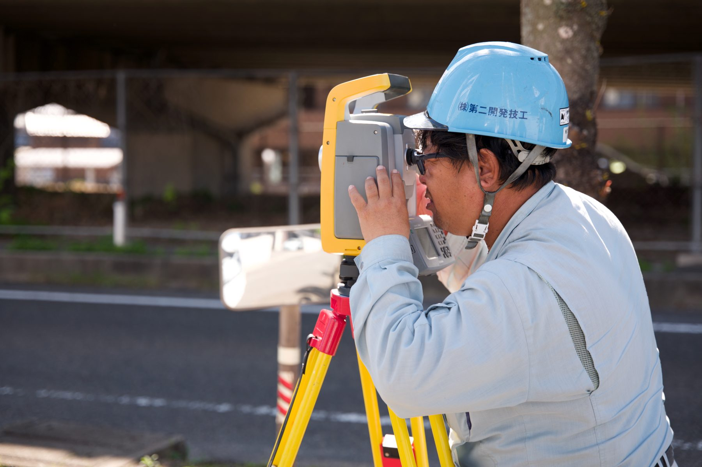
案件概要／期間／技術者要件をお聞きします。
経験・保有資格を踏まえ、適任者をご提案。
労働者派遣契約を締結。
稼働中も定期的に状況確認・フォローを行います。
| 道路工事 | 国道・県道・市道の新設／改良工事、舗装工事の施工管理支援 |
|---|---|
| 橋梁工事 | 橋梁架設・高速道路床版補修工事の施工管理支援 |
| 造成工事 | 宅地造成・工業用地造成の施工管理支援 |
| 河川工事 | 護岸工事・河道掘削の施工管理支援 |
| トンネル・その他 | 山岳トンネル・道路構造物の施工管理支援 |
※ 具体案件・発注者名は掲載しておりません。ご希望に応じて個別にご案内します。
公共測量・工事測量から3次元計測まで、“はかる”のあらゆる場面で。土木設計・地質調査・環境調査で、次の一歩の計画を描く。そして、労働者派遣許可のもと施工管理技術者を現場へ——「一社完結でお願いできる測量パートナー」として、お客様の現場を支えます。